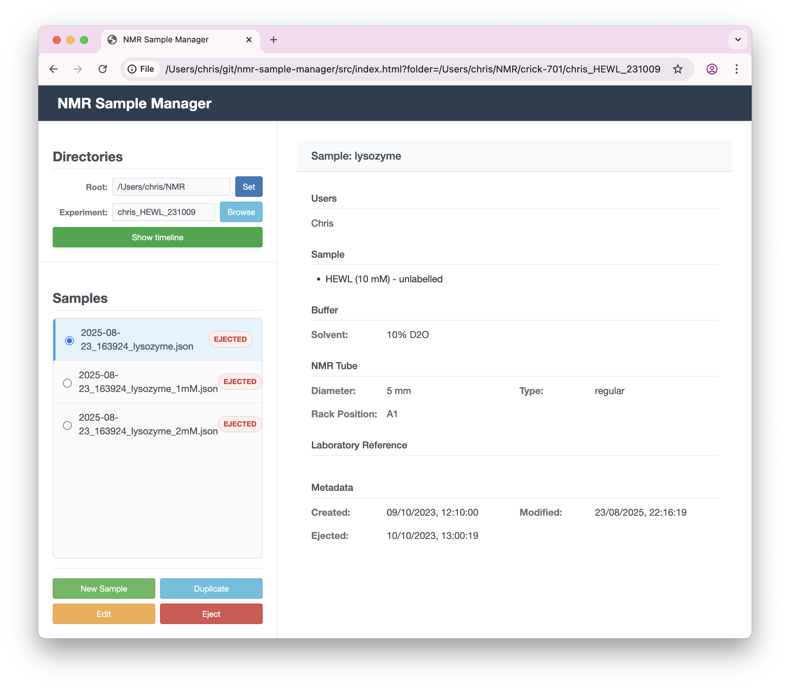
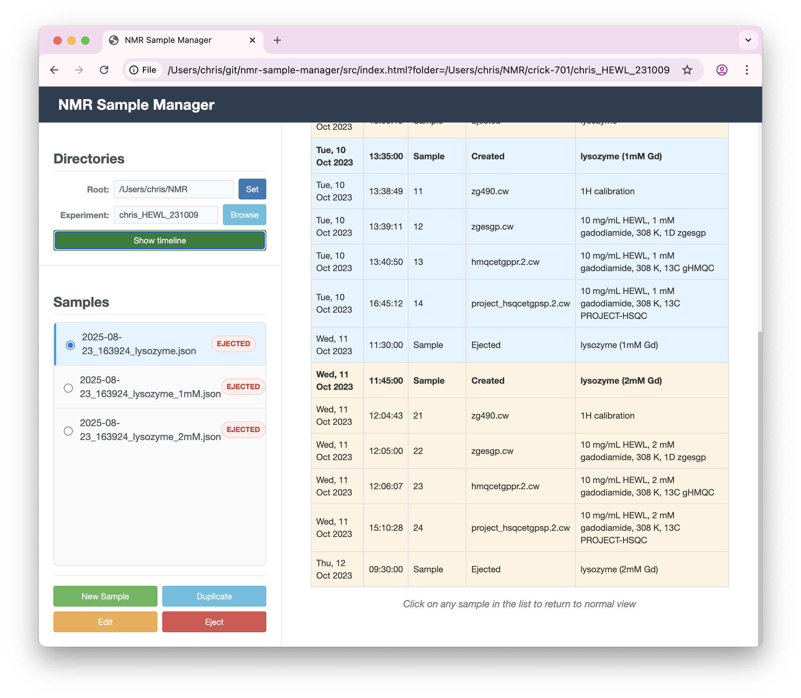

Usage Guide
Core Concept
The NMR Sample Manager creates simple metadata files in your dataset directories to record when samples are injected and ejected. All other information is optional but can be recorded to help keep track of your measurements.
Information can be captured about:
- Users: People involved in the experiment
- Sample: Molecule names, concentrations, isotopic labeling
- Buffer: pH, buffer components, solvent information
- NMR Tube: Tube type, diameter, sample volume
- Sample Position: SampleJet rack positions
- Laboratory Reference: Lab book entries, experiment IDs
- Notes: Additional observations
Remember: all fields are optional - use only what you need!
Managing Samples
Creating a New Sample
- Click the "New Sample" button
- Fill in the form with your sample information (all fields are optional)
- The plus (+) buttons can be used to add fields, e.g. for users, or buffer components
- Click "Save" or press ENTER to store the sample metadata
- To cancel entry, just interact with another sample, or go to the timeline view
Editing Existing Samples
- Select a sample from the list
- Click "Edit" to modify the information
- Make your changes and click "Save"
Duplicating Samples
Perfect for titration series or similar experiments:
- Select an existing sample
- Click "Duplicate"
- Modify the details as needed
- Save the new sample
Timeline View
Click "Show timeline" to see a complete history of all samples in the current experiment, including when they were created, modified, and ejected.
Sample Ejection
When you're done with a sample, click "Eject" to timestamp when it was removed. This helps track which samples are currently active in the spectrometer.
File Storage
Sample data is stored as human-readable JSON files in your experiment directories. These files:
- Can be opened in any text editor
- Work well with version control systems like Git
- Include timestamps for creation, modification, and ejection
- Follow a consistent naming pattern:
timestamp_samplename.json
Tips
- Use the duplicate feature for sample series with small variations
- The timeline view helps you see the complete experiment history
- All sample information is automatically timestamped
- You can edit or update samples anytime
- Use the Notes field for any additional observations
JSON Schema
The NMR Sample Manager uses a JSON Schema to define the structure and validation rules for sample metadata. A JSON Schema is like a blueprint that describes what information can be stored and how it should be formatted.
For example, the schema defines:
- Which fields are available (Users, Sample, Buffer, etc.)
- What type of data each field accepts (text, numbers, predefined options)
- Validation rules (e.g., pH must be between 0 and 14)
- Default values and descriptions for each field
The current schema version is available at: current/schema.json
This schema-driven approach ensures:
- Consistency: All sample files follow the same structure
- Validation: Data is checked for correctness before saving
- Evolution: The schema can be updated while maintaining compatibility with existing data
- Transparency: The data structure is clearly documented and machine-readable
Support and Development
The NMR Sample Manager is an open-source project hosted on GitHub:
- Source code: github.com/nmr-samples/online
- Report issues or request features: Create a new issue
Found a bug or have a suggestion? Please report it on GitHub - this helps improve the application for everyone.